🃏 Como jogar o Samba juntos
Cada um joga no seu próprio celular, um contra o outro. É só seguir os passos, na ordem. As partes em vermelho nas fotos mostram onde tocar.
👋 Primeiro: abrir o jogo
Os dois abrem o link menuup.github.io/samba-da-tania (ou o QR code). Se aparecer a tela de parabéns, toque em “Entrar na festa”.
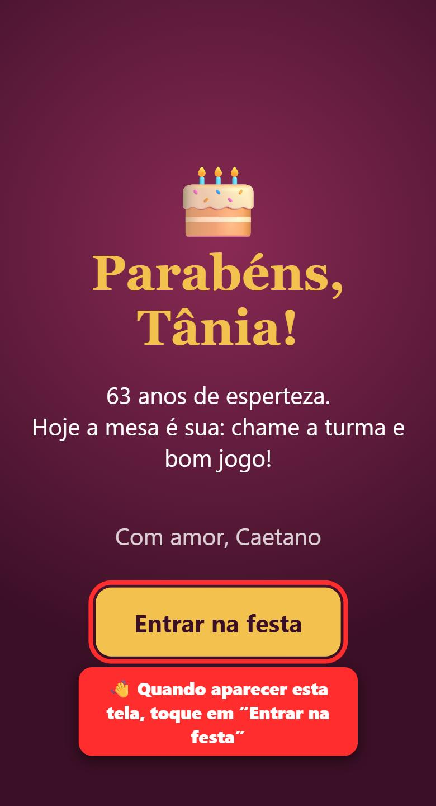
Escolham quem vai criar a mesa. Essa pessoa precisa deixar o celular com a tela acesa até o fim do jogo.
1 “Com a família”
Na tela inicial, toque no quadrado verde “Com a família”.
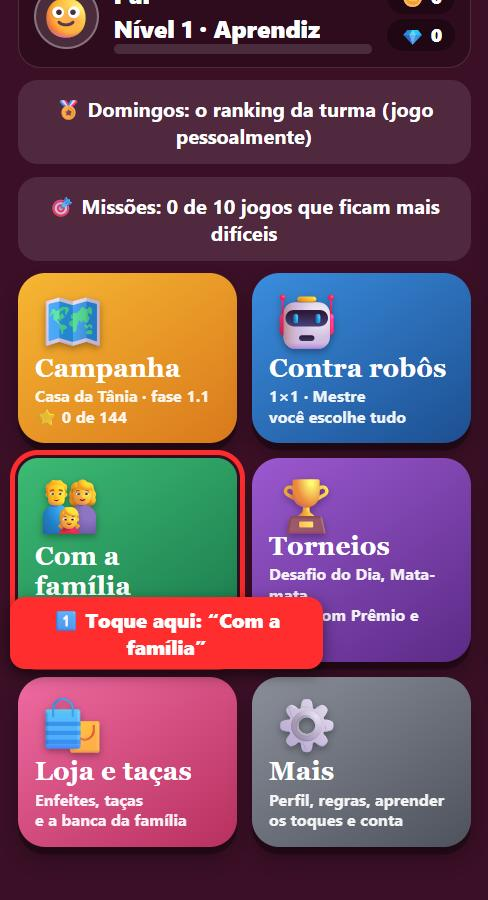
2 “Criar uma mesa”
Toque no botão amarelo grande.
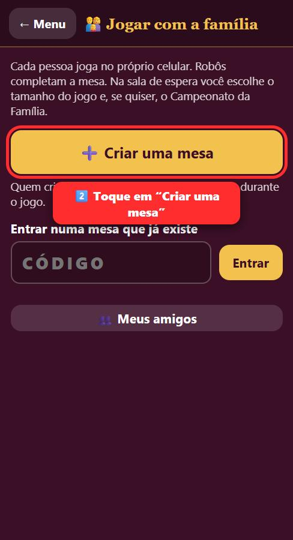
3 “Convidar”
Aparece o código da mesa. Toque em “Convidar”, escolha o WhatsApp e mande para a outra pessoa.
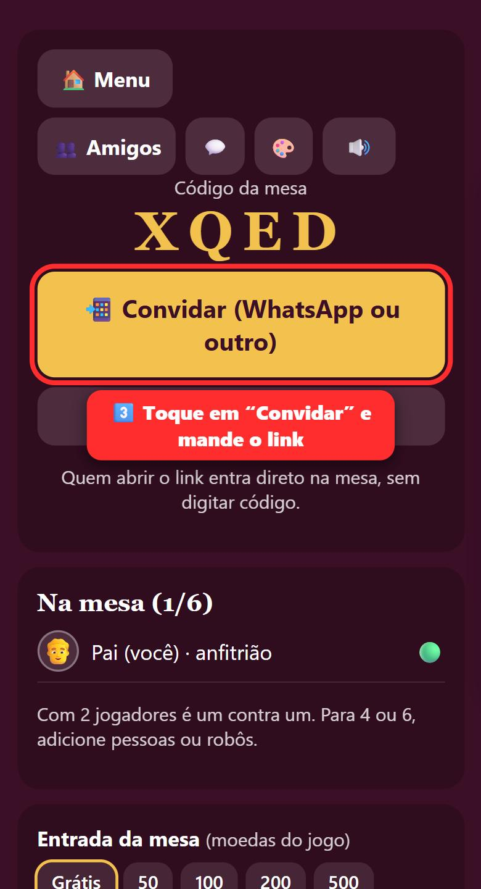
4 Tocar no link
Abra a mensagem do WhatsApp e toque no link. Você entra sozinha na mesa. Na primeira vez o jogo pergunta seu nome: escreva e toque em “Continuar”.
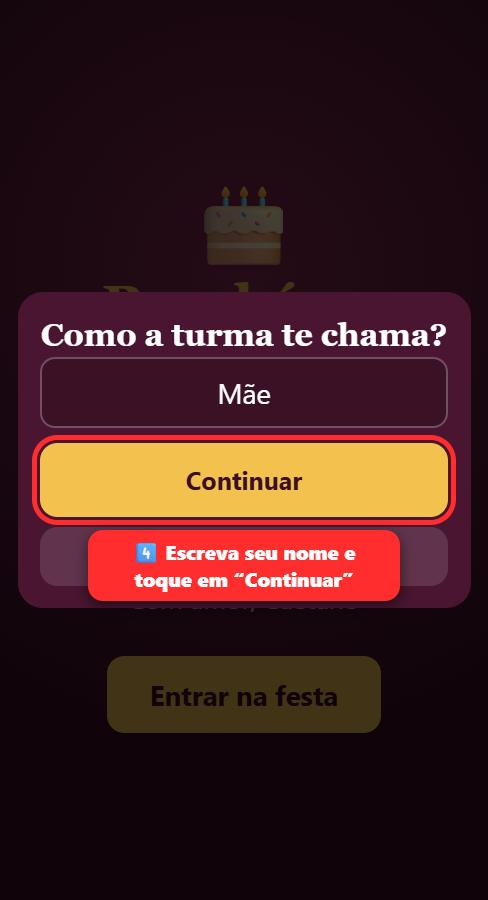
Depois aparece esta tela, com os dois nomes. É só esperar o outro começar:
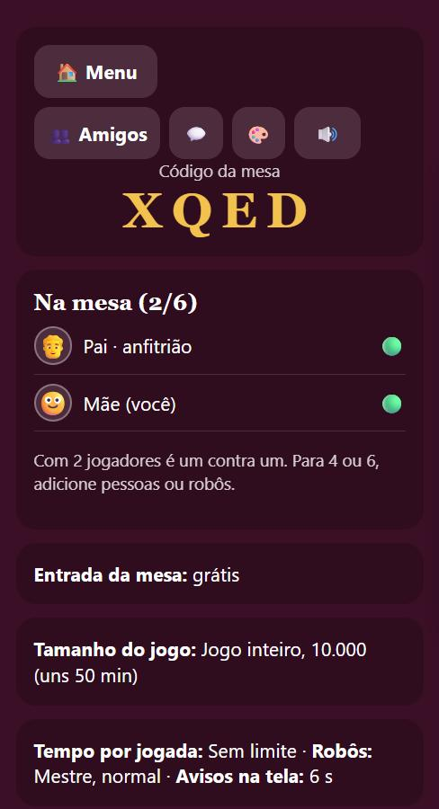
5 “Começar o jogo”
Quando os dois nomes aparecerem em “Na mesa”, role a tela até o fim e toque em “Começar o jogo”.
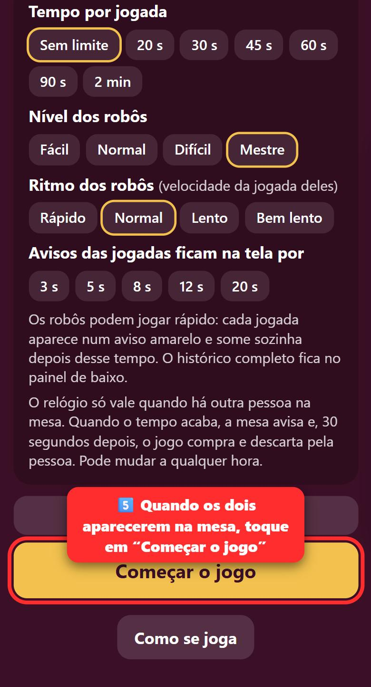
6 Comprar 2 cartas
Quando aparecer “Sua vez!”, toque no monte (as cartas viradas) 2 vezes.
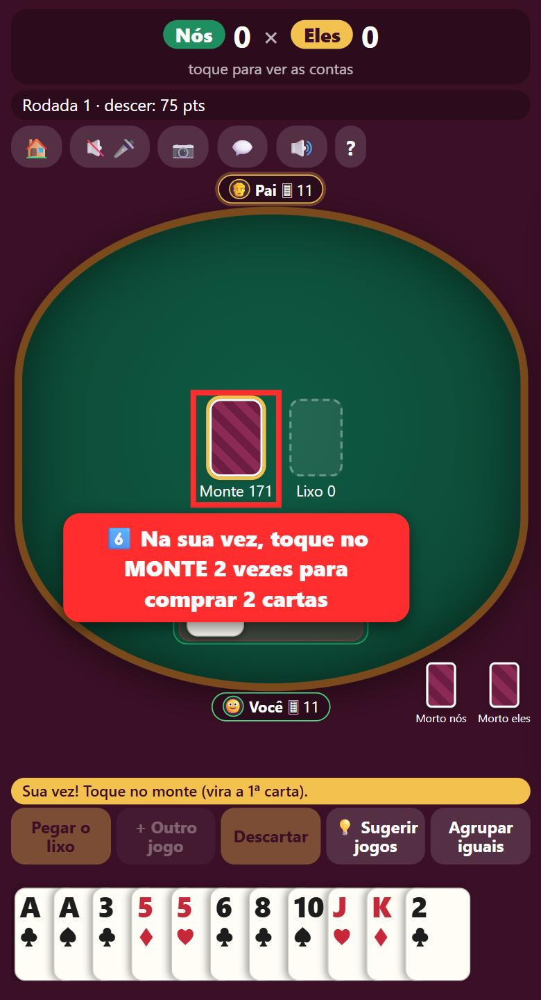
7 Baixar jogos
Toque em 3 ou mais cartas iguais da sua mão (elas sobem) e depois em “Baixar”. Na primeira vez são precisos 75 pontos em jogos.
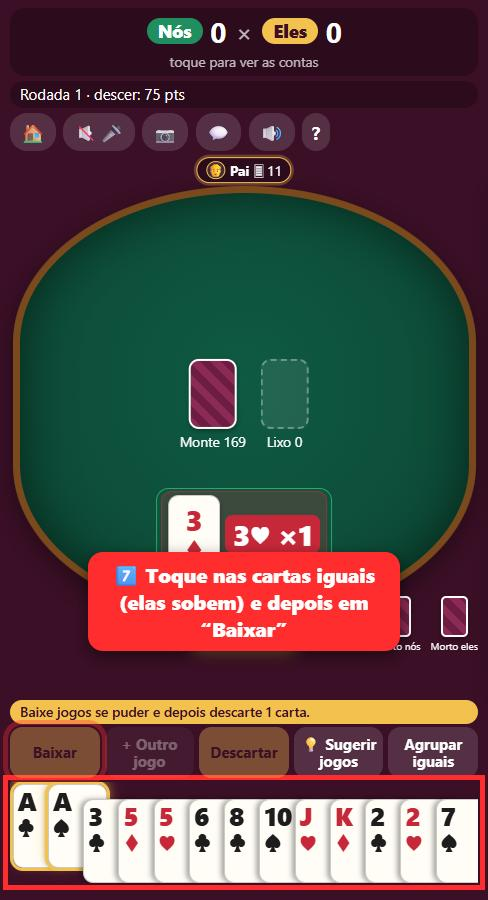
8 Terminar a vez
Toque em 1 carta que você não quer mais e depois em “Descartar”. Agora é a vez do outro.
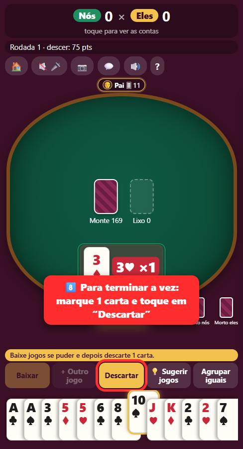
9 Voltar à mesa
O jogo tenta voltar sozinho. Se não voltar, abra o jogo de novo e toque em “Voltar à mesa”. Seu jogo continua de onde parou.
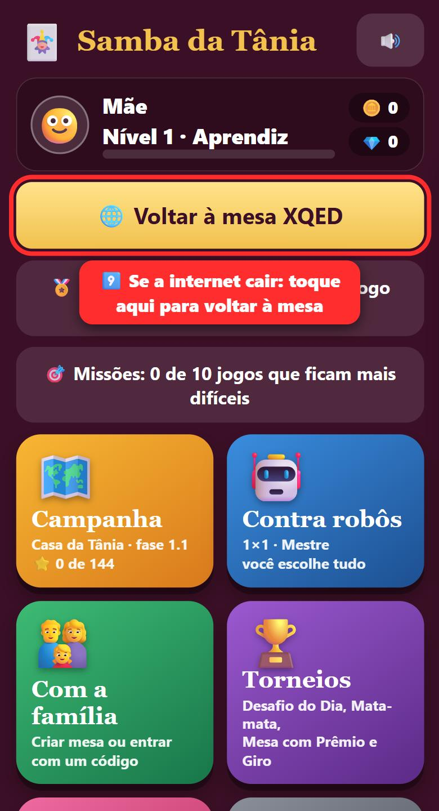
Bom jogo! 🎉